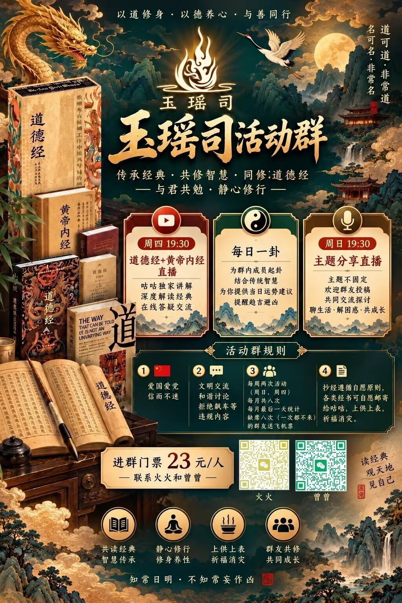

<!doctype html><html lang="zh-CN"><head><meta charset="utf-8"><meta name="viewport" content="width=device-width,initial-scale=1"><meta name="theme-color" content="#102820"><title>玉瑶司 · 问心寻解</title><style>:root{--ink:#15352e;--deep:#102820;--gold:#a88752;--paper:#f8f5ed;--cream:#ede7d8;--line:#dcd4c3;--muted:#67776c}*{box-sizing:border-box}html{scroll-behavior:smooth}body{margin:0;background:var(--paper);color:var(--ink);font:16px/1.8 -apple-system,BlinkMacSystemFont,'Noto Serif SC','Songti SC','Microsoft Yahei',serif}button,input{font:inherit}button{cursor:pointer;border:0;background:none;color:inherit}button:focus-visible,input:focus-visible{outline:2px solid var(--gold);outline-offset:3px}.shell{min-height:100vh;display:flex;flex-direction:column}.top{display:flex;align-items:center;justify-content:space-between;padding:19px max(5vw,20px);border-bottom:1px solid var(--line);background:#fbf9f4}.brand{font-weight:700;letter-spacing:.18em;font-size:22px}.brand span{font-weight:400;letter-spacing:.05em;font-size:13px;color:var(--muted)}nav{display:flex;gap:22px}nav button{font-size:13px;color:#47665a}main{flex:1;width:min(1120px,92%);margin:0 auto}footer{text-align:center;color:#7c887e;border-top:1px solid var(--line);padding:24px;font-size:12px}.hero{min-height:75vh;display:flex;flex-direction:column;align-items:center;justify-content:center;text-align:center;position:relative;padding:55px 0 70px}.hero:before{content:'';position:absolute;inset:4% 15%;border:1px solid #d9cfb8;border-radius:50% 50% 3% 3%;pointer-events:none;opacity:.5}.seal{background:var(--deep);color:#d9bf84;border:1px solid #b69a60;outline:5px solid var(--deep);width:56px;height:74px;line-height:1.5;padding-top:8px;margin-bottom:40px;font-size:21px;letter-spacing:.1em}.eyebrow{color:var(--gold);font-size:12px;letter-spacing:.35em;font-weight:600}.hero h1{font-size:clamp(38px,6vw,76px);line-height:1.5;font-weight:500;letter-spacing:.14em;margin:8px 0 12px}.hero h1 em{font-style:normal;color:#8c784e}.hero p:not(.eyebrow){color:#68786c}.primary{background:var(--deep);color:#f7f1df;padding:14px 35px;border:1px solid var(--deep);transition:.2s;display:inline-block;margin-top:20px}.primary:hover{background:#285044;transform:translateY(-2px)}.primary span{margin-left:30px;color:#d7c29b}.home-links{display:flex;gap:24px;margin-top:40px;flex-wrap:wrap;justify-content:center}.home-links button,.subactions button{color:#5d7466;text-decoration:underline;text-underline-offset:6px;font-size:13px}.explore-layout{display:grid;grid-template-columns:260px 1fr;gap:70px;padding:75px 0}.path{border-right:1px solid var(--line);padding-right:28px}.path-title{font-size:12px;color:var(--gold);letter-spacing:.2em}.nodes{display:flex;flex-direction:column;align-items:flex-start;margin-top:20px}.node{padding:12px 14px;border:1px solid var(--line);background:#f4efe5;text-align:left;width:100%;font-size:13px;line-height:1.6;transition:.2s}.node small{display:block;color:#8c7d62}.node.active{border-color:var(--gold);background:#e9e0cb}.node.done{background:#e8eee8;border-color:#b4c9b9}.connector{padding-left:20px;color:var(--gold)}.question{max-width:680px;animation:appear .35s ease}.question h2,.page-head h2{font-size:clamp(26px,4vw,40px);font-weight:500;letter-spacing:.05em;line-height:1.45;margin:14px 0}.muted{color:var(--muted)}.choices{display:grid;gap:12px;margin:38px 0 25px}.choice{display:flex;align-items:center;justify-content:space-between;text-align:left;background:#fffdf8;border:1px solid var(--line);padding:15px 20px;min-height:60px;transition:.2s}.choice:hover{border-color:var(--gold);background:#f0eadc;transform:translateX(4px)}.choice span{color:var(--gold)}.subactions{display:flex;gap:25px;flex-wrap:wrap}.page-head{padding:65px 0 35px;border-bottom:1px solid var(--line)}.result-grid{display:grid;grid-template-columns:280px 1fr;gap:35px;margin:36px 0 65px}.summary,.detail{background:#fffdf8;border:1px solid var(--line);padding:25px}.summary{align-self:start;position:sticky;top:15px}.summary h3{font-size:18px;font-weight:500}.summary button{display:block;text-decoration:underline;color:#3f6757;margin-top:12px;font-size:13px}pre{white-space:pre-wrap;overflow-wrap:anywhere;font:inherit;color:#4b6255}.results{display:grid;gap:20px}.card{background:#fffdf8;border:1px solid var(--line);padding:25px;min-width:0}.card-top{display:flex;justify-content:space-between;gap:10px;flex-wrap:wrap}.chip,.tag{font-size:12px;color:#7c785e}.tag{border:1px solid #b9a67d;padding:0 8px}.card h3{font-weight:500;font-size:23px;margin:10px 0}.price{font-size:19px;color:#a0793c;font-weight:600;overflow-wrap:anywhere}.card p{color:#53675b;overflow-wrap:anywhere}.card .reason{border-left:2px solid var(--gold);padding-left:12px;color:#365b4b}.fine{font-size:12px!important;color:#839084!important}.actions{display:flex;flex-wrap:wrap;gap:9px;margin-top:18px}.actions button,.filters button,.comparebar button,.detail button:not(.primary),.empty button{padding:7px 12px;border:1px solid #c7c7b5;font-size:13px}.actions button:hover,.filters button:hover{border-color:var(--gold)}.actions .outline{background:#e9eee8;border-color:#b8c9bc}.toolbar{display:flex;gap:18px;align-items:center;justify-content:space-between;margin:30px 0;flex-wrap:wrap}input[type=search]{background:#fffdf8;border:1px solid var(--line);padding:12px 14px;width:min(360px,100%);border-radius:0}.filters{display:flex;gap:7px;flex-wrap:wrap}.filters .selected{background:var(--deep);color:white}.count{color:var(--muted);font-size:13px}.catalog-grid{display:grid;grid-template-columns:repeat(2,minmax(0,1fr));gap:20px;margin-bottom:65px}.detail{margin:30px auto 75px;max-width:760px}.detail-row{border-bottom:1px solid var(--line);padding:12px 0}.detail-row b{font-size:13px;color:#8d7957}.detail-row p{margin:4px 0}.empty{padding:40px;border:1px dashed #c5bba8}.comparebar{position:sticky;bottom:10px;background:var(--deep);color:#fff;padding:12px 18px;display:flex;align-items:center;gap:15px;justify-content:center;z-index:3}.comparebar button{color:white}.comparison{display:grid;grid-template-columns:repeat(auto-fit,minmax(260px,1fr));gap:18px;margin:30px 0}.qr{max-width:220px}.hero,.page-head{animation:appear .5s ease}@keyframes appear{from{opacity:0;transform:translateY(9px)}to{opacity:1;transform:translateY(0)}}@media(max-width:760px){.top{flex-direction:column;gap:8px;padding:12px}.brand{font-size:19px}nav{gap:15px}.hero{min-height:70vh}.hero:before{inset:7% 1%}.explore-layout,.result-grid{grid-template-columns:1fr;gap:20px;padding-top:20px}.path{border-right:0;border-bottom:1px solid var(--line);padding:0 0 18px}.nodes{margin-top:8px;flex-direction:row;overflow-x:auto;align-items:center;gap:6px}.node{min-width:115px;width:auto;max-width:170px;padding:8px;font-size:11px;flex-shrink:0}.connector{padding:0;transform:rotate(-90deg)}.question{padding:12px 0 30px}.catalog-grid{grid-template-columns:1fr}.summary{position:static}.page-head{padding:35px 0 20px}.card{padding:19px}.home-links{gap:14px}.home-links button{font-size:12px}}@media(prefers-reduced-motion:reduce){*,*:before,*:after{animation:none!important;transition:none!important;scroll-behavior:auto!important}}
/* v2 additions */
.catalog-tree{margin:28px 0 55px}.catalog-cat{margin:13px 0;border:1px solid var(--line);background:#fffdf8}.cat-heading,.sub-heading{width:100%;display:flex;align-items:center;justify-content:space-between;text-align:left;padding:17px 22px;font-size:20px}.cat-heading{background:#edf0e8}.cat-heading small,.sub-heading small{font-size:12px;color:var(--muted);font-weight:400}.subgroups{padding:10px 20px 20px}.subgroup{border-bottom:1px solid var(--line)}.sub-heading{font-size:16px;padding:14px 9px}.products{padding:3px 0 15px}.product-row{width:100%;display:flex;align-items:center;justify-content:space-between;text-align:left;gap:20px;padding:13px 15px;border-bottom:1px solid #ece6d9;background:#fff}.product-row:hover{background:#f3eee2}.product-row b{font-size:14px;color:#a0793c;font-weight:500;text-align:right;max-width:48%;overflow-wrap:anywhere}.product-row small{font-size:12px;color:var(--muted)}.bottom{margin:25px 0 55px}.comparison .card p{overflow-wrap:anywhere}.detail-row p{white-space:pre-line}.hero h1{letter-spacing:.08em}@media(max-width:760px){.cat-heading{font-size:18px}.subgroups{padding:6px 10px 14px}.product-row{padding:13px 7px;font-size:14px}.product-row b{font-size:12px}.nodes{flex-direction:column;overflow:visible;align-items:stretch}.node{width:100%;max-width:none}.connector{transform:none;padding-left:15px;line-height:12px}}

/* V3: 首页对联、三字竖匾、移动端全屏视觉 */
.hero{min-height:calc(100svh - 170px);min-height:max(690px,calc(100svh - 170px));display:grid;grid-template-columns:minmax(36px,1fr) minmax(0,8fr) minmax(36px,1fr);align-items:stretch;gap:clamp(4px,1vw,20px);padding:26px 0 28px;isolation:isolate}
.hero:before{inset:5% 6%;z-index:-1}
.hero-center{grid-column:2;min-width:0;display:flex;flex-direction:column;align-items:center;justify-content:center;text-align:center;gap:clamp(10px,2vh,22px);padding:16px 0}
.hero-side{writing-mode:vertical-rl;text-orientation:upright;white-space:nowrap;display:flex;align-items:center;justify-content:center;align-self:stretch;justify-self:center;font-size:clamp(25px,3.4vw,52px);font-weight:600;letter-spacing:.16em;line-height:1.1;color:var(--ink);font-family:'Kaiti SC','STKaiti','KaiTi','Songti SC',serif}
.hero-side-left{grid-column:1;grid-row:1}.hero-side-right{grid-column:3;grid-row:1}
.hero-center .seal{height:auto;min-height:125px;width:64px;display:flex;flex-direction:column;justify-content:center;align-items:center;gap:6px;padding:12px 0;margin:0;line-height:1.3}
.hero-center .seal span{display:block}
.hero-center .eyebrow{margin:8px 0 0}
.hero-center h1{font-size:clamp(32px,5.5vw,70px);margin:0;line-height:1.55;letter-spacing:.045em;white-space:nowrap}
.hero-center p:not(.eyebrow){margin:0;font-size:clamp(12px,1.6vw,17px)}
.hero-center .primary{margin-top:8px;min-width:min(300px,100%)}
.hero-center .home-links{margin-top:8px;gap:12px 22px}
@media(max-width:760px){
 .hero{width:100%;min-height:max(760px,calc(100svh - 165px));grid-template-columns:minmax(26px,13%) minmax(0,74%) minmax(26px,13%);gap:0;padding:15px 0 18px}
 .hero:before{inset:5% 1%}
 .hero-side{font-size:clamp(24px,6.8vw,39px);letter-spacing:.15em}
 .hero-center{gap:clamp(14px,2.5vh,26px);padding:16px 1px}
 .hero-center .seal{min-height:136px;width:58px;font-size:20px;gap:9px}
 .hero-center .eyebrow{font-size:10px;letter-spacing:.18em}
 .hero-center h1{font-size:clamp(27px,7.2vw,43px);letter-spacing:0;line-height:1.75}
 .hero-center p:not(.eyebrow){font-size:clamp(11px,3.1vw,15px);line-height:2}
 .hero-center .primary{min-width:0;width:90%;padding:13px 8px}
 .hero-center .home-links{display:flex;flex-direction:column;align-items:center;gap:12px;margin-top:10px}
 .hero-center .home-links button{font-size:12px}
}
@media(max-width:370px){.hero-center h1{font-size:25px}.hero-side{font-size:23px}.hero-center .eyebrow{letter-spacing:.07em}}

/* Global back button */
.global-back-wrap{padding-top:20px;margin-bottom:0}
.global-back{display:inline-flex;align-items:center;gap:9px;padding:9px 16px;border:1px solid #dcd4c3;background:#f8f5ed;color:#47665a;font-size:14px;letter-spacing:.06em;transition:background .2s,border-color .2s}
.global-back:hover{background:#e8eee8;border-color:#a88752;color:#15352e}
@media(max-width:760px){.global-back-wrap{padding-top:14px}.global-back{padding:8px 12px;font-size:13px}}

/* 产品详情与关于我们：正方形图片 */
.yy-square-image{display:block;width:min(100%,520px);aspect-ratio:1/1;object-fit:contain;margin:18px auto 28px;background:#fffdf8;border:1px solid var(--line)}
.yy-square-image[hidden]{display:none!important}
.yy-about-image{margin:0 auto 28px}
@media(max-width:760px){.yy-square-image{width:100%;margin:16px auto 22px}}
</style></head><body><div id="app"></div><script>window.YY_PRODUCTS=[{"id":"YY-001","category":"实体类","subcategory":"符箓大类","name":"各种形式的符","price":"详情咨询","remark":"待补充","description":"有四种形式：三角形折纸符、画框符、法扇、卷轴。有三个品级：民间符箓、天师符箓、上古神符。根据形式不同，有效期有差别。详情具体咨询。","tags":["传统祈福","姻缘","实体物品","求子","符箓"],"priceType":"consult","spec":"待补充"},{"id":"YY-002","category":"实体类","subcategory":"饰品","name":"具体来图可定制","price":"定制详情咨询","remark":"待补充","description":"根据个人的属性，净化杂气，护佑平安，挡煞避凶，祈福助运，顺遂心意，咕咕buff。需定期寄回重新开光","tags":["定制","实体物品","平安","开光","祈福","饰品"],"priceType":"consult","spec":"待补充"},{"id":"YY-003","category":"实体类","subcategory":"香囊","name":"端午香囊","price":"36、58、88","remark":"待补充","description":"36(安神，驱蚊，防疫，解暑，提神，疏肝解郁)；58(端午)；88(辟邪)","tags":["健康关切","实体物品","平安","节庆","香囊"],"priceType":"range","spec":"待补充"},{"id":"YY-004","category":"实体类","subcategory":"朱砂","name":"铜仁·万山朱砂饰品","price":"6mm圆珠：10元一克。8mm圆珠：15元一克。10mm圆珠：20元一克。12mm圆珠：25元一克。各种雕花：25元一克。特殊朱砂：70元一克。","remark":"若开光（时效一年）","description":"至阳之物，驱邪避凶，宁心安神。净化杂气，护佑平安，挡煞避凶，祈福助运，顺遂心意，咕咕buff。需定期寄回重新开光。特殊朱砂：1.特别处理过（供过半年以上，数量不多）；2.珐琅朱砂等特殊款朱砂。","tags":["健康关切","实体物品","平安","开光","朱砂","祈福","长期"],"priceType":"range","spec":"若开光（时效一年）"},{"id":"YY-005","category":"食品类","subcategory":"修愈乐","name":"红瓶（补血）","price":"280/盒","remark":"20盒一箱","description":"补血滋阴，健脾益肾，血虚为主，阴血不足，面色萎黄，唇甲色淡，头晕心悸，皮肤干燥，补精血。一盒起发，买一箱送刺梨桂花红茶","tags":["修愈乐","健康关切","茶饮","血虚","食品"],"priceType":"fixed_or_start","spec":"20盒一箱"},{"id":"YY-006","category":"食品类","subcategory":"修愈乐","name":"蓝瓶（补气）","price":"280/盒","remark":"20盒一箱","description":"益气养血，健脾扶正，定惊，气虚为主，劳倦内伤，针对易疲乏、气短、懒言、精神不振、动则汗出、劳倦后恢复慢。一盒起发，买一箱送刺梨桂花红茶","tags":["修愈乐","健康关切","气虚","茶饮","食品"],"priceType":"fixed_or_start","spec":"20盒一箱"},{"id":"YY-007","category":"食品类","subcategory":"茶叶","name":"刺梨桂花红茶（盒装）","price":"125/盒","remark":"60g盒装","description":"好喝。全线产品买三送一（送价格最低的一盒茶叶）","tags":["茶饮","食品"],"priceType":"fixed_or_start","spec":"60g盒装"},{"id":"YY-008","category":"食品类","subcategory":"茶叶","name":"刺梨桂花红茶（礼盒装）","price":"375/盒","remark":"180g礼盒装","description":"好喝。全线产品买三送一（送价格最低的一盒茶叶）","tags":["茶饮","食品"],"priceType":"fixed_or_start","spec":"180g礼盒装"},{"id":"YY-009","category":"食品类","subcategory":"茶叶","name":"祁门红茶（盒装）","price":"256/盒","remark":"100g盒装","description":"好喝。全线产品买三送一（送价格最低的一盒茶叶）","tags":["茶饮","食品"],"priceType":"fixed_or_start","spec":"100g盒装"},{"id":"YY-010","category":"食品类","subcategory":"茶叶","name":"祁门红茶（半斤礼盒装）","price":"580/盒","remark":"250g礼盒装","description":"好喝。全线产品买三送一（送价格最低的一盒茶叶）","tags":["茶饮","食品"],"priceType":"fixed_or_start","spec":"250g礼盒装"},{"id":"YY-011","category":"食品类","subcategory":"茶叶","name":"祁门红茶（一斤礼盒装）","price":"1100/盒","remark":"一斤礼盒装","description":"好喝。全线产品买三送一（送价格最低的一盒茶叶）","tags":["茶饮","食品"],"priceType":"fixed_or_start","spec":"一斤礼盒装"},{"id":"YY-012","category":"食品类","subcategory":"茶叶","name":"石阡苔茶（绿茶盒装）","price":"188/盒","remark":"100g盒装","description":"好喝。全线产品买三送一（送价格最低的一盒茶叶）","tags":["茶饮","食品"],"priceType":"fixed_or_start","spec":"100g盒装"},{"id":"YY-013","category":"食品类","subcategory":"茶叶","name":"石阡苔茶（绿茶半斤盒装）","price":"445/盒","remark":"250g礼盒装","description":"好喝。全线产品买三送一（送价格最低的一盒茶叶）","tags":["茶饮","食品"],"priceType":"fixed_or_start","spec":"250g礼盒装"},{"id":"YY-014","category":"食品类","subcategory":"茶叶","name":"石阡苔茶（绿茶一斤礼盒装）","price":"880/盒","remark":"一斤礼盒装","description":"好喝。全线产品买三送一（送价格最低的一盒茶叶）","tags":["茶饮","食品"],"priceType":"fixed_or_start","spec":"一斤礼盒装"},{"id":"YY-015","category":"咨询类","subcategory":"中式心理学咨询","name":"中式心理咨询（15mins）","price":"188+看情况随喜","remark":"15min","description":"有明确问题，通过算卦配合一定程度上心理疏导手法，有效帮助各位能够有更多解决方案的灵感和参考。（具体问题）","tags":["决策","咨询"],"priceType":"fixed_or_start","spec":"15min"},{"id":"YY-016","category":"咨询类","subcategory":"中式心理学咨询","name":"中式心理咨询（45mins）","price":"388+看情况随喜","remark":"45min","description":"不太有明确问题，通过命理的手法，配合一定程度上心理疏导手法，有效帮助各位能够有更多解决方案的灵感和参考。（选一项：事业、财富、田宅、父母、子女、兄弟、夫妻、健康、福德、迁移）","tags":["事业","人际","健康关切","决策","咨询","姻缘","婚姻","家宅","求子","财运"],"priceType":"fixed_or_start","spec":"45min"},{"id":"YY-017","category":"咨询类","subcategory":"中式心理学咨询","name":"中式心理咨询（2h）","price":"1280+看情况随喜","remark":"2h","description":"相对迷茫、相对无解、以及想要更好地了解自身。手段不限。可以看八字，紫薇，全盘都看，问到你没的问。（事业、财富、田宅、父母、子女、兄弟、夫妻、健康、福德、迁移）","tags":["事业","人际","健康关切","决策","咨询","姻缘","婚姻","家宅","成长","求子","财运"],"priceType":"fixed_or_start","spec":"2h"},{"id":"YY-018","category":"咨询类","subcategory":"中式心理学咨询","name":"解卦决策月卡","price":"2800","remark":"一个月","description":"仅解卦+卦的决策，加送实体六十四卦，送实体玉瑶司本子","tags":["决策","咨询","长期"],"priceType":"fixed_or_start","spec":"一个月"},{"id":"YY-019","category":"咨询类","subcategory":"中式心理学咨询","name":"解卦决策年卡","price":"16800","remark":"一年","description":"仅解卦+卦的决策，加送实体六十四卦，送实体玉瑶司本子；可体验3次，收20%定金不退","tags":["决策","咨询","长期"],"priceType":"fixed_or_start","spec":"一年"},{"id":"YY-020","category":"咨询类","subcategory":"中式心理学咨询","name":"月度成长计划","price":"3650","remark":"一个月","description":"每天1h定制服务+人生规划、就业指导、方向、思想提升等等，加送咕咕版新编道德经，送实体玉瑶司本子；可体验2天，收20%定金不退","tags":["事业","咨询","定制","成长","长期"],"priceType":"fixed_or_start","spec":"一个月"},{"id":"YY-021","category":"咨询类","subcategory":"择日","name":"合婚","price":"88","remark":"待补充","description":"合夫妻八字，选日子","tags":["决策","咨询","姻缘","婚姻","择日"],"priceType":"fixed_or_start","spec":"待补充"},{"id":"YY-022","category":"咨询类","subcategory":"择日","name":"择日","price":"200","remark":"待补充","description":"开业、迁居、挂牌择日、沐浴、祭祀、祈福、开光、设醮；纳采、冠笄；入宅、移徙、安床；动土、修造、上梁、竖柱；开市、立券、交易、纳财；出行、谒贵、求医；破土、启攒；裁衣、沐浴、收仓、栽种等。死人下葬不包括在内","tags":["事业","咨询","婚姻","家宅","开光","择日","祈福","祖先祭祀","财运"],"priceType":"fixed_or_start","spec":"待补充"},{"id":"YY-023","category":"咨询类","subcategory":"风水","name":"风水咨询(平层线上看是否有问题)","price":"详情咨询","remark":"平层","description":"只看房屋是否有风水问题。如果没有风水问题，就再考虑别的情况。如果是房子的风水问题，需要线上调，就按照房屋面积收费。前期的288/388元可抵扣后期调风水的价格。可根据情况随喜。","tags":["咨询","家宅","线上","风水"],"priceType":"consult","spec":"平层"},{"id":"YY-024","category":"咨询类","subcategory":"风水","name":"风水咨询(自建房/别墅线上看是否有问题)","price":"详情咨询","remark":"自建房、别墅","description":"只看房屋是否有风水问题。如果没有风水问题，就再考虑别的情况。如果是房子的风水问题，需要线上调，就按照房屋面积收费。前期的288/388元可抵扣后期调风水的价格。可根据情况随喜。","tags":["咨询","家宅","线上","风水"],"priceType":"consult","spec":"自建房、别墅"},{"id":"YY-025","category":"咨询类","subcategory":"风水","name":"风水咨询(平层线上调整)","price":"详情咨询","remark":"平层","description":"已入住，调整风水问题，不做局，只调气，理顺杂气。可根据情况随喜。","tags":["咨询","线上","风水"],"priceType":"consult","spec":"平层"},{"id":"YY-026","category":"咨询类","subcategory":"风水","name":"风水咨询(自建房/别墅线上调整)","price":"详情咨询","remark":"自建房、别墅","description":"已入住，调整风水问题，不做局，只调气，理顺杂气。可根据情况随喜。","tags":["咨询","线上","风水"],"priceType":"consult","spec":"自建房、别墅"},{"id":"YY-027","category":"咨询类","subcategory":"风水","name":"风水布置（实地，从选址开始）","price":"详情咨询","remark":"从选址开始","description":"从毛坯，设计开始。包含可各种特殊要求，比如财运，平安等（包含画符，器物开光，不包含器物）。可根据情况随喜。","tags":["咨询","定制","平安","开光","线下","财运","风水"],"priceType":"consult","spec":"从选址开始"},{"id":"YY-028","category":"咨询类","subcategory":"风水","name":"风水布置（实地，房子已建好）","price":"详情咨询","remark":"已建好的房子","description":"装修好，清理，加理气，起势。（包含画符）。可根据情况随喜。","tags":["咨询","家宅","线下","风水"],"priceType":"consult","spec":"已建好的房子"},{"id":"YY-029","category":"咨询类","subcategory":"风水","name":"阴宅（寻龙点穴）","price":"详情咨询","remark":"特殊殡葬服务。咕咕和咕咕师傅一起干。可根据情况随喜。","description":"待补充","tags":["咨询","风水"],"priceType":"consult","spec":"特殊殡葬服务。咕咕和咕咕师傅一起干。可根据情况随喜。"},{"id":"YY-030","category":"课程类","subcategory":"秘法课程","name":"秘法课","price":"880","remark":"录制","description":"静心，固财，安神。以群内通知为主","tags":["健康关切","学习","秘法","财运","静心"],"priceType":"fixed_or_start","spec":"录制"},{"id":"YY-031","category":"课程类","subcategory":"国学课程","name":"国学基础班","price":"1280","remark":"录制","description":"以群内通知为主","tags":["国学","学业","学习"],"priceType":"fixed_or_start","spec":"录制"},{"id":"YY-032","category":"课程类","subcategory":"术数课程","name":"梅花易数（直播）","price":"2000","remark":"直播","description":"以群内通知为主","tags":["学习","术数"],"priceType":"fixed_or_start","spec":"直播"},{"id":"YY-033","category":"课程类","subcategory":"术数课程","name":"梅花易数（录播）","price":"2800","remark":"录制","description":"以群内通知为主","tags":["学习","术数"],"priceType":"fixed_or_start","spec":"录制"},{"id":"YY-034","category":"课程类","subcategory":"术数课程","name":"小六壬","price":"免费+30元资料费（电子版）","remark":"一节直播（12人起）","description":"以群内通知为主","tags":["学习","术数"],"priceType":"fixed_or_start","spec":"一节直播（12人起）"},{"id":"YY-035","category":"法会","subcategory":"法会","name":"新年福利-正月初五太岁+财神","price":"详情咨询","remark":"待补充","description":"功效：拜太岁、迎财神。安奉太岁，稳流年不顺；招聚财禄，旺事业机缘，扫除一年阻滞，迎新春祥瑞，护整年平安顺遂。","tags":["事业","传统仪式","平安","法会","祈福","节庆","财运","长期"],"priceType":"consult","spec":"待补充"},{"id":"YY-036","category":"法会","subcategory":"法会","name":"正月十五-天官赐福上元节","price":"详情咨询","remark":"待补充","description":"功效：天官赐福、祈福消灾、转运迎祥。天官赐福临身，消弭灾咎是非，驱散晦气，转运启新，助家宅安宁、诸事吉祥如意。","tags":["传统仪式","家宅","平安","法会","祈福","节庆"],"priceType":"consult","spec":"待补充"},{"id":"YY-037","category":"法会","subcategory":"法会","name":"六月十九-慈航真人成道","price":"详情咨询","remark":"待补充","description":"功效：慈航真人成道祈福，保平安、消灾、慈悲护佑。慈航真人庇佑，护身心平安，消灾解难，平息烦忧焦虑，化解凶险，慈悲护持，安稳无虞。","tags":["传统仪式","平安","法会","祈福","节庆"],"priceType":"consult","spec":"待补充"},{"id":"YY-038","category":"法会","subcategory":"法会","name":"七月十五-地官赦罪","price":"详情咨询","remark":"待补充","description":"功效：地官赦罪、超度祖先、忏悔消业、消灾。地官赦宥过往罪业，超度先祖、有缘宗亲，忏悔消障，化解霉运阻滞，减少是非不顺。","tags":["传统仪式","平安","法会","祈福","祖先祭祀","节庆"],"priceType":"consult","spec":"待补充"},{"id":"YY-039","category":"法会","subcategory":"法会","name":"九月九日-重阳节","price":"详情咨询","remark":"待补充","description":"功效：为家中老人祈健康长寿、自身增补阳气，辟邪。祈家中长辈福寿绵长、身康体健；增补自身阳气，辟除邪祟阴扰，稳固气场，少病少忧。","tags":["传统仪式","健康关切","平安","成长","法会","祈福","节庆"],"priceType":"consult","spec":"待补充"},{"id":"YY-040","category":"法会","subcategory":"法会","name":"十月十五-水官解厄","price":"详情咨询","remark":"待补充","description":"功效：水官解厄、化灾解厄、消灾转运。水官大帝圣寿，化解流年、身心、家宅、事业各类灾厄，清障除滞，扫除旧烦，纳安康顺遂。","tags":["事业","传统仪式","家宅","平安","法会","祈福","节庆"],"priceType":"consult","spec":"待补充"},{"id":"YY-041","category":"法会","subcategory":"法会","name":"文昌（公历6月）","price":"详情咨询","remark":"待补充","description":"功效：文昌帝君法会，助学业、考试、文职、升迁。文昌帝君加持，文思畅达，利学业应试、考场发挥，助文职晋升，化解阻滞，前程开阔。","tags":["事业","传统仪式","学业","法会","祈福","节庆"],"priceType":"consult","spec":"待补充"},{"id":"YY-042","category":"法会","subcategory":"法会","name":"二月十五-老君圣诞","price":"详情咨询","remark":"待补充","description":"功效：老君圣诞法会，有意想不到的效果。","tags":["传统仪式","法会","祈福","节庆"],"priceType":"consult","spec":"待补充"},{"id":"YY-043","category":"法会","subcategory":"法会","name":"四月十八-老君得道","price":"详情咨询","remark":"待补充","description":"功效：老君得道法会，有意想不到的效果。","tags":["传统仪式","法会","祈福","节庆"],"priceType":"consult","spec":"待补充"},{"id":"YY-044","category":"法会","subcategory":"法会","name":"腊月廿四-老君飞仙","price":"详情咨询","remark":"待补充","description":"功效：老君飞仙法会，有意想不到的效果。","tags":["传统仪式","法会","祈福","节庆"],"priceType":"consult","spec":"待补充"},{"id":"YY-045","category":"法会","subcategory":"法会","name":"冬至-庆祝新年","price":"详情咨询","remark":"待补充","description":"只代烧，自行把愿望寄过来","tags":["传统仪式","法会","祈福","节庆"],"priceType":"consult","spec":"待补充"},{"id":"YY-046","category":"法会","subcategory":"法会","name":"单人全年法会","price":"详情咨询","remark":"全年","description":"上面所有法会，符只包含招财符。","tags":["传统仪式","法会","祈福","财运","长期"],"priceType":"consult","spec":"全年"},{"id":"YY-047","category":"法会","subcategory":"个人法会","name":"补财库（可线上线下）","price":"定制","remark":"终身","description":"需要根据八字单独测算。先清偿受生债，扫清禄运阻滞，化解无形耗财之障；再修补财库空缺，封堵漏财缺口，拓宽财源、稳固积蓄。依八字单独测算，线上线下均可安排，债清库实，财禄方能安稳留存。咕咕的师傅做。","tags":["个人法会","传统仪式","决策","法会","祈福","线上","线下","财运"],"priceType":"consult","spec":"终身"},{"id":"YY-048","category":"法会","subcategory":"个人法会","name":"私人定制法会（可线上线下）","price":"3000起","remark":"单次单场","description":"专属一对一专项禳解，针对个人流年症结、运势短板、生活阻滞单独上表通疏。可专项化解官非口舌、小人煞、病灾隐疾、感情阻碍、事业瓶颈、家宅不安、阴扰晦气、旧业纠缠、婴灵等各类疑难问题。消宿厄、净气场、破阻碍、开福运，按需定制科仪，精准针对性祈福转运，护佑全年顺遂安稳。","tags":["个人法会","事业","人际","传统仪式","健康关切","姻缘","定制","家宅","平安","求子","法会","祈福","线上","线下","长期"],"priceType":"fixed_or_start","spec":"单次单场"},{"id":"YY-049","category":"开光","subcategory":"物品供香","name":"供香","price":"500/一个月","remark":"待补充","description":"50cm以内的物品。神像，照片除外。需定期寄回重新开光","tags":["传统仪式","供奉","开光"],"priceType":"fixed_or_start","spec":"待补充"},{"id":"YY-050","category":"开光","subcategory":"首饰类","name":"首饰开光","price":"300/件","remark":"一年","description":"清净饰品杂气，敕令加持，随身护佑，挡避晦气小人，调和自身气场，助缘主平安纳福，诸事稳顺。需定期寄回重新开光","tags":["人际","传统仪式","平安","开光","成长","祈福","长期"],"priceType":"fixed_or_start","spec":"一年"},{"id":"YY-051","category":"开光","subcategory":"镇物（非神像）","name":"镇物开光（50cm以内）","price":"800/件","remark":"终身","description":"净化器物浊气，赋镇煞安宅之力，稳固家宅气场，化解周遭不利煞气，守宅安宁，护阖家平顺。","tags":["传统仪式","供奉","家宅","平安","开光"],"priceType":"fixed_or_start","spec":"终身"},{"id":"YY-052","category":"开光","subcategory":"镇物（非神像）","name":"镇物开光（50cm以上）","price":"1800/件","remark":"终身","description":"净化器物浊气，赋镇煞安宅之力，稳固家宅气场，化解周遭不利煞气，守宅安宁，护阖家平顺。","tags":["传统仪式","供奉","家宅","平安","开光"],"priceType":"fixed_or_start","spec":"终身"},{"id":"YY-053","category":"开光","subcategory":"神像","name":"神像开光（50cm以内）","price":"1600/件","remark":"终身","description":"择吉行科仪，点窍安灵，恭请神明驻像，承接神威，供祀祈愿有感，护佑家宅兴旺、福慧绵长。","tags":["传统仪式","供奉","家宅","平安","开光","择日","祈福"],"priceType":"fixed_or_start","spec":"终身"},{"id":"YY-054","category":"开光","subcategory":"神像","name":"神像开光（50cm以上）","price":"2300/件","remark":"终身","description":"择吉行科仪，点窍安灵，恭请神明驻像，承接神威，供祀祈愿有感，护佑家宅兴旺、福慧绵长。","tags":["传统仪式","供奉","家宅","平安","开光","择日","祈福"],"priceType":"fixed_or_start","spec":"终身"}];</script><script>(()=>{'use strict';
const P=window.YY_PRODUCTS||[],C=['实体类','食品类','咨询类','课程类','法会','开光'];
const ROOT=[['人生方向与决策','决策'],['事业、财运与学业','事业'],['姻缘、婚姻与人际','姻缘'],['求子与家庭','求子'],['健康与日常状态','健康关切'],['家宅、风水与平安','家宅'],['传统祈福与节庆','祈福'],['学习传统文化','学习'],['物品、茶饮与日常','食品'],['我有多个问题','多项'],['我不确定属于哪类','不确定']];
const SUB={
'决策':[['有一件具体事情难以决定','决策'],['对未来感到迷茫','成长'],['希望持续规划与成长','长期'],['想先了解自己的情况','咨询']],
'事业':[['工作发展、升迁与就业','事业'],['财运祈愿或补财库','财运'],['学习考试与文昌','学业'],['开业、交易等事项择日','择日']],
'姻缘':[['希望了解姻缘、感情发展','姻缘'],['婚姻合婚、婚期','婚姻'],['夫妻关系或人际困扰','人际'],['感情方面想进一步沟通','咨询']],
'求子':[['关注求子祈愿','求子'],['想聊子女、家庭关系','咨询'],['希望先了解传统祈福选项','祈福']],
'健康关切':[['疲乏、气短、精神不足','气虚'],['面色、干燥等状态关切','血虚'],['希望静心安神','静心'],['为自己或长辈祈福','平安'],['希望进一步沟通','咨询']],
'家宅':[['房屋风水情况','风水'],['入住、装修或选址','房屋'],['家宅平安祈愿','平安'],['开光、镇物、供香','开光'],['择日或迁居','择日']],
'祈福':[['日常平安祈福','平安'],['节庆法会','节庆'],['个人专项法会','个人法会'],['祖先祭祀相关','祖先祭祀'],['了解符箓形式','符箓']],
'学习':[['国学入门','国学'],['梅花易数、小六壬','术数'],['秘法、静心相关课程','秘法'],['想看看全部课程','学习']],
'食品':[['日常茶饮、礼盒','茶饮'],['修愈乐红瓶或蓝瓶','修愈乐'],['香囊、饰品或朱砂','实体物品'],['物品开光或供香','开光']],
'多项':[['事业与财运','事业'],['感情与家庭','姻缘'],['家宅与平安','家宅'],['方向与成长','成长'],['健康与日常','健康关切'],['其他组合，进一步沟通','咨询']],
'不确定':[['先梳理自己的问题','咨询'],['先看看传统祈福','祈福'],['先看看实体物品','实体物品'],['先了解服务图鉴','图鉴']]};
const FORM=[['分析、咨询或决策参考','咨询'],['传统祈福、法会或仪式','仪式'],['符箓、饰品等实体物品','物品'],['风水、择日或开光事务','事务'],['课程、知识或技能','学习'],['茶饮、食品或日常用品','食品'],['尚不确定','不限']];
const DETAILS={咨询:[['有明确问题，简短咨询','明确'],['希望全面了解与深入梳理','深入'],['需要长期跟进','长期'],['暂不确定','不限']],仪式:[['日常祈福','祈福'],['节庆法会','法会'],['个人专项定制','个人法会'],['暂不确定','不限']],物品:[['符箓（各种形式）','符箓'],['饰品、朱砂、香囊','实体物品'],['希望了解开光','开光'],['暂不确定','不限']],事务:[['房屋风水','风水'],['择日或合婚','择日'],['开光、供香','开光'],['暂不确定','不限']],学习:[['国学基础','国学'],['术数学习','术数'],['秘法课程','秘法'],['暂不确定','不限']],食品:[['修愈乐','修愈乐'],['茶叶礼盒','茶饮'],['香囊或朱砂','实体物品'],['暂不确定','不限']],不限:[['先看可能的选择','不限'],['希望深入沟通','咨询']]};
const STAGES=['关注方向','具体困扰','希望的帮助','进一步偏好'];
let S={view:'home',answers:[],step:0,category:null,sub:null,query:'',detail:null,compare:[],from:'catalog',multi:[],history:[]};
const $=q=>document.querySelector(q),escape=x=>String(x??'待补充').replace(/[&<>"']/g,c=>({'&':'&amp;','<':'&lt;','>':'&gt;','"':'&quot;',"'":'&#39;'}[c]));
function persist(){try{sessionStorage.setItem('yy_v2',JSON.stringify(S))}catch{}}
function snapshot(){return {view:S.view,step:S.step,category:S.category,sub:S.sub,query:S.query,detail:S.detail}}
function view(v,record=true){if(record&&S.view!==v){S.history.push(snapshot());if(S.history.length>60)S.history.shift()}S.view=v;render()}
function restoreHistory(){let h=S.history.pop();if(h){Object.assign(S,h);render()}else view('home',false)}
function previous(){if(S.view==='explore'){if(S.step>0)back(S.step-1);else restoreHistory();return}if(S.view==='results'){back(Math.max(0,Math.min(3,S.answers.length-1)));return}if(S.view==='catalog'){if(S.sub!==null){S.sub=null;render();return}if(S.category!==null){S.category=null;render();return}}restoreHistory()}
function start(){S.history.push(snapshot());S={...S,view:'explore',answers:[],step:0,multi:[]};render()}
function choose(v,l){if(S.answers[S.step]?.value!==v)S.answers=S.answers.slice(0,S.step);S.answers[S.step]={value:v,label:l};S.step++;if(S.step>=4)S.view='results';render()}
function back(n){S.step=Math.max(0,Math.min(3,n));view('explore',false)}
function header(body){$('#app').innerHTML=`<div class="shell"><header class="top"><button class="brand" data-act="home">玉瑶司 <small>· 问心寻解</small></button><nav><button data-act="explore">需求探索</button><button data-act="catalog">服务图鉴</button><button data-act="about">关于我们</button></nav></header><main>${S.view!=='home'?'<div class="global-back-wrap"><button class="global-back" data-act="previous">← 返回上一级</button></div>':''}${body}</main><footer>玉瑶司 · 心有所惑，循迹而解。<br>本页面仅为服务信息导航，传统文化与祈福实践不保证现实结果，不能替代专业医疗、心理、法律或财务建议。探索选择仅存储于当前浏览器会话。</footer></div>`;bind()}
const button=(l,v)=>`<button class="choice" data-choice="${escape(v)}" data-label="${escape(l)}">${escape(l)}<span>↗</span></button>`;
function home(){header(`<section class="hero"><div class="hero-side hero-side-left" aria-label="无缘千金难求道">无缘千金难求道</div><div class="hero-side hero-side-right" aria-label="有缘分文不取收">有缘分文不取收</div><div class="hero-center"><div class="seal"><span>玉</span><span>瑶</span><span>司</span></div><p class="eyebrow">Y U · Y A O · S I</p><h1>念念不忘<br><em>必有回响</em></h1><p>每个人的困惑都有不同的来处。<br>让我们从你的问题开始。</p><button class="primary" data-act="start">开始探索　→</button><div class="home-links"><button data-act="catalog">直接查看全部服务</button><button data-act="unsure">我不知道自己需要什么</button><button data-act="about">了解玉瑶司</button></div></div></section>`)}
function path(){return `<aside class="path"><p class="eyebrow">探索之径 · 点击返回</p><div class="nodes"><button class="node ${S.step===0?'active':'done'}" data-back="0">起点</button>${S.answers.map((a,i)=>`<span class="connector">│</span><button class="node done" data-back="${i+1}"><small>${STAGES[i]}</small>${escape(a.label)}</button>`).join('')}</div></aside>`}
function explore(){let n=Math.min(S.step,3),opts=n===0?ROOT:n===1?(SUB[S.answers[0]?.value]||SUB['不确定']):n===2?FORM:(DETAILS[S.answers[2]?.value]||DETAILS['不限']);let title=['您目前最想了解什么？','哪一种情况更贴近您？','您希望获得怎样的帮助？','进一步了解您的偏好'][n];header(`<div class="explore-layout">${path()}<section class="question"><p class="eyebrow">第 ${n+1} / 4 步</p><h2>${title}</h2><p class="muted">选择最贴近您当前情况的一项；您可以随时返回修改。</p><div class="choices">${opts.map(([l,v])=>button(l,v)).join('')}</div><div class="subactions"><button data-act="results">先看看推荐</button><button data-act="restart">重新探索</button><button data-act="catalog">直接查看服务</button></div></section></div>`)}
function match(p){let a=S.answers,primary=a[1]?.value||a[0]?.value,top=a[0]?.value,form=a[2]?.value,detail=a[3]?.value,t=p.tags,score=0,why=[];if(!primary)return {score:-1,why};if(t.includes(primary)){score+=65;why.push(`对应您关注的「${a[1]?.label||a[0]?.label}」`)}else if(t.includes(top)){score+=25;why.push('与您选择的关注方向有关')}
 const fm={咨询:['咨询'],仪式:['传统仪式','法会','祈福'],物品:['实体物品'],事务:['风水','择日','开光'],学习:['学习'],食品:['食品']};if(form&&form!=='不限'){if((fm[form]||[]).some(x=>t.includes(x))){score+=30;why.push('符合您偏好的帮助形式')}else score-=45}
 if(detail&&detail!=='不限'){if(t.includes(detail)){score+=24;why.push('与进一步偏好相符')}else score-=12}
 // A universal cultural option, not an assertion of efficacy. Only surface when user has completed a meaningful path.
 if(p.subcategory==='符箓大类'){score=Math.max(score,49);why=['可作为进一步了解的传统符箓祈福选项；具体形式与适用方向需人工沟通确认']}
 if(primary==='求子'&&p.subcategory!=='符箓大类'&&!t.includes('求子'))score=-1;
 if(primary==='图鉴')score=-1;
 return {score,why}}
function matches() {
  if (!S.answers.length) return [];
  const all = P.map(p => ({p,...match(p)}))
    .filter(x => x.score >= 49 && x.why.length)
    .sort((a,b) => b.score-a.score || a.p.id.localeCompare(b.p.id));
  const names = new Set();
  for (const item of all) {
    if (!names.has(item.p.name) && names.size >= 3) break;
    names.add(item.p.name);
  }
  return all.filter(item => names.has(item.p.name));
}

function summary(){return S.answers.map((a,i)=>`${STAGES[i]}：${a.label}`).join('\n')||'尚未完成探索'}
function listItem(p){return `<button class="product-row" data-detail="${p.id}"><span>${escape(p.name)}</span><b>${escape(p.price)}${/^\d+$/.test(p.price)?' 元':''}</b></button>`}
function resultCard(x,i){let p=x.p;return `<article class="card"><p class="eyebrow">${i===0?'优先匹配':'其他可考虑'}</p><p class="chip">${escape(p.category)} / ${escape(p.subcategory)}</p><h3>${escape(p.name)}</h3><p class="price">${escape(p.price)}${/^\d+$/.test(p.price)?' 元':''}</p><p class="reason">根据您提供的信息，这项服务可能符合您的需求。${escape(x.why.join('；'))}。</p><div class="actions"><button data-detail="${p.id}">查看详细介绍</button><button data-consult="${p.id}">咨询这项服务</button></div></article>`}
function results(){let m=matches();header(`<div class="page-head"><p class="eyebrow">问心 · 寻解</p><h2>根据您的选择，我们找到了这些可能适合您的服务。</h2><p class="muted">推荐为初步信息匹配，不代表对结果的保证。</p></div><div class="result-grid"><aside class="summary"><h3>您的探索路径</h3><pre>${escape(summary())}</pre><button data-act="copy">复制我的需求摘要</button><button data-act="edit">修改选择</button></aside><section class="results">${m.length?m.map(resultCard).join(''):`<div class="empty"><h3>推荐进一步深入沟通</h3><p>目前信息不足以匹配具体服务。可以在群里，或联系曾曾、火火进一步沟通。</p></div>`}<div class="subactions"><button data-act="restart">重新探索</button><button data-act="catalog">查看其他服务</button></div></section></div>`)}
function catalog(){let q=S.query.trim().toLowerCase(),items=P.filter(p=>[p.name,p.category,p.subcategory,p.price,p.remark,p.description,...p.tags].join(' ').toLowerCase().includes(q));let cats=S.category?[S.category]:C;let content=cats.map(cat=>{let ps=items.filter(p=>p.category===cat);if(!ps.length)return '';let subs=[...new Set(ps.map(p=>p.subcategory))];return `<section class="catalog-cat"><button class="cat-heading" data-cat="${escape(cat)}"><span>${escape(cat)} <small>${ps.length} 项</small></span><span>${S.category===cat?'－':'＋'}</span></button>${S.category===cat?`<div class="subgroups">${subs.map(sub=>`<section class="subgroup"><button class="sub-heading" data-sub="${escape(sub)}">${escape(sub)} <small>${ps.filter(p=>p.subcategory===sub).length} 项</small> <span>${S.sub===sub?'－':'＋'}</span></button>${S.sub===sub?`<div class="products">${ps.filter(p=>p.subcategory===sub).map(listItem).join('')}</div>`:''}</section>`).join('')}</div>`:''}</section>`}).join('');header(`<div class="page-head"><p class="eyebrow">玉瑶司 · 服务图鉴</p><h2>一览所藏，按需寻访。</h2><p class="muted">玉瑶司有求必应。愿以诚心承接诸位困惑，循理答疑，助君拨开迷障，寻得心安与方向。</p></div><div class="toolbar"><input id="search" type="search" placeholder="搜索名称、分类或关键词" value="${escape(S.query)}"><button data-act="allcats">全部大类</button></div><div class="catalog-tree">${content||'<div class="empty">没有找到相关服务，请更换关键词。</div>'}</div><div class="subactions bottom"><button data-act="restart">返回需求探索</button><button data-act="compare">查看产品对比（${S.compare.length}/3）</button></div>`)}
function detail(){let p=P.find(x=>x.id===S.detail);if(!p){view('catalog');return}header(`<div class="page-head"><p class="eyebrow">服务详情 · ${escape(p.id)}</p><h2>${escape(p.name)}</h2><p class="muted">${escape(p.category)} / ${escape(p.subcategory)}</p></div><article class="detail"><p class="price">${escape(p.price)}${/^\d+$/.test(p.price)?' 元':''}</p><div class="detail-row"><b>详细描述</b><p>${escape(p.description)}</p></div><div class="detail-row"><b>备注 / 规格 / 服务条件</b><p>${escape(p.remark)}</p></div><div class="actions"><button data-consult="${p.id}">咨询这项服务</button><button data-compare="${p.id}">${S.compare.includes(p.id)?'取消对比':'加入对比'}</button><button data-act="catalog">返回服务图鉴</button><button data-act="results">返回推荐</button></div></article>`)}
function consult(){let p=P.find(x=>x.id===S.detail);header(`<div class="page-head"><p class="eyebrow">进一步沟通</p><h2>把您的问题，带给我们。</h2></div><div class="detail"><p>意向服务：<b>${escape(p?.name||'尚未确定')}</b></p><pre>${escape(summary())}</pre><p>可以在群里，或者联系<strong>曾曾或火火</strong>进行进一步沟通。</p><p class="muted">本页面不提供联系方式，也不会自动上传您的选择。</p><div class="actions"><button data-act="copyconsult">复制咨询摘要</button><button data-act="catalog">查看全部服务</button><button data-act="results">返回推荐</button></div></div>`)}
function about(){header(`<div class="page-head"><p class="eyebrow">ABOUT · 玉瑶司</p><h2>先问心，再寻解。</h2></div><div class="detail"><p>「问心寻解」是玉瑶司的互动服务导航：从当前困惑出发，了解可能相关的实体产品、食品、咨询、课程、法会与开光服务。</p><p>如果希望进一步了解，可以在群里或者联系曾曾或火火沟通。本页面不公开联系方式。</p><p class="muted">服务描述保留原始提供文本，其中传统功效属于商家描述与文化信仰表述，不应被理解为经科学验证的效果承诺。食品及身心相关服务不替代医疗诊断或治疗。</p><button class="primary" data-act="start">开始探索</button></div>`)}
function compare(){let ps=S.compare.map(id=>P.find(p=>p.id===id)).filter(Boolean);header(`<div class="page-head"><h2>服务对比</h2><p class="muted">最多对比 3 项</p></div><div class="comparison">${ps.length?ps.map(p=>`<article class="card"><h3>${escape(p.name)}</h3><p class="chip">${escape(p.category)} / ${escape(p.subcategory)}</p><p class="price">${escape(p.price)}</p><p>${escape(p.description)}</p><button data-detail="${p.id}">查看详情</button><button data-compare="${p.id}">移除</button></article>`).join(''):'<p>请先在图鉴或详情页添加需要对比的服务。</p>'}</div><button data-act="catalog">返回服务图鉴</button>`)}
function copy(t){if(navigator.clipboard&&window.isSecureContext)navigator.clipboard.writeText(t).then(()=>alert('已复制')).catch(()=>fallback(t));else fallback(t)}function fallback(t){let el=document.createElement('textarea');el.value=t;document.body.append(el);el.select();try{document.execCommand('copy');alert('已复制')}catch{alert('请手动复制')}el.remove()}
function bind(){document.querySelectorAll('[data-act]').forEach(b=>b.addEventListener('click',()=>{let a=b.dataset.act;if(a==='home')view('home');else if(a==='start'||a==='restart')start();else if(a==='unsure'){start();choose('不确定','我不确定属于哪类')}else if(a==='previous')previous();else if(a==='explore'){if(S.step>=4)S.step=3;view('explore')}else if(a==='edit')back(Math.max(0,S.answers.length-1));else if(a==='results')view('results');else if(a==='catalog')view('catalog');else if(a==='about')view('about');else if(a==='allcats'){S.category=null;S.sub=null;view('catalog')}else if(a==='compare')view('compare');else if(a==='copy')copy('玉瑶司 · 需求摘要\n'+summary());else if(a==='copyconsult'){let p=P.find(x=>x.id===S.detail);copy('玉瑶司 · 咨询摘要\n意向服务：'+(p?.name||'待确认')+'\n'+summary())}}));document.querySelectorAll('[data-choice]').forEach(b=>b.addEventListener('click',()=>{if(b.dataset.choice==='图鉴'){view('catalog');return}choose(b.dataset.choice,b.dataset.label)}));document.querySelectorAll('[data-back]').forEach(b=>b.addEventListener('click',()=>back(Number(b.dataset.back))));document.querySelectorAll('[data-cat]').forEach(b=>b.addEventListener('click',()=>{S.category=S.category===b.dataset.cat?null:b.dataset.cat;S.sub=null;render()}));document.querySelectorAll('[data-sub]').forEach(b=>b.addEventListener('click',()=>{S.sub=S.sub===b.dataset.sub?null:b.dataset.sub;render()}));document.querySelectorAll('[data-detail]').forEach(b=>b.addEventListener('click',()=>{view('detail');S.detail=b.dataset.detail;render()}));document.querySelectorAll('[data-consult]').forEach(b=>b.addEventListener('click',()=>{view('consult');S.detail=b.dataset.consult;render()}));document.querySelectorAll('[data-compare]').forEach(b=>b.addEventListener('click',()=>{let id=b.dataset.compare;if(S.compare.includes(id))S.compare=S.compare.filter(x=>x!==id);else if(S.compare.length<3)S.compare.push(id);else{alert('最多对比3项');return}render()}));let input=$('#search');if(input)input.addEventListener('input',()=>{let pos=input.selectionStart;S.query=input.value;catalog();let next=$('#search');next.focus();next.setSelectionRange(pos,pos)})}
function render(){persist();({home,explore,results,catalog,detail,consult,about,compare}[S.view]||home)();window.scrollTo(0,0)}
try{let saved=JSON.parse(sessionStorage.getItem('yy_v2'));if(saved&&Array.isArray(saved.answers)&&Number.isInteger(saved.step)&&saved.step>=0&&saved.step<=4)S={...S,...saved,history:Array.isArray(saved.history)?saved.history:[]}}catch{}
window.YY_APP={products:P,matches,start,previous,render,ROOT,SUB};render();
})();
</script></body></html>
